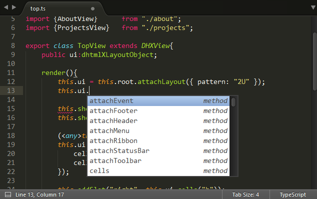

With DHTMLX of version 5.1 and higher, you can initialize and work with DHTMLX components from TypeScript.

The library package includes the codebase/dhtmlx.d.ts file which contains TypeScript definitions for all components of DHTMLX Suite. As for dhtmlxGantt and dhtmlxScheduler, they possess their own TypeScript definitions:
Why do you need to use DHTMLX with TypeScript?
Firstly, it is quite obvious that by checking the types, you will write a more stable code.
One more important advantage is that all modern IDE will provide suggestions and type checking for your code created with DHTMLX.
To use TypeScript, you need to configure a toolchain which will compile ts files into a regular JavaScript. There are a lot of ways to do it, you can choose any of them.
To simplify your work, we provide a simple project starter which contains everything you need to work with TypeScript: a Typescript package to compile typescript files into JavaScript and Webpack to bundle all files in the final app.
You need just grab the starter - this is a bootstrap for DHTMLX-based apps with TypeScript support.
After unzipping the archive, run the following commands to start the project:
npm install
npm run server
DHTMLX Optimus is a micro framework for organizing DHTMLX-based apps.
By default Optimus uses modern JavaScript (ES6), but it can work equally well with TypeScript.
To estimate the possibilities of this integration, you can grab the latest copy of a starter project for Optimus-Typescript-based apps. Then you can run it by using standard commands:
npm install
npm run server
Optimus-TypeScript integration doesn't require any changes in the API and usage principles in comparison to the vanilla version of DHTMLX Optimus.
As you can see, in the case of combination with TypeScript, the app uses a bit different toolchain and files extensions in sources are changed to .ts, all the rest is the same. The code of views doesn't differ from that of normal JavaScript, except for added typings.
Back to top